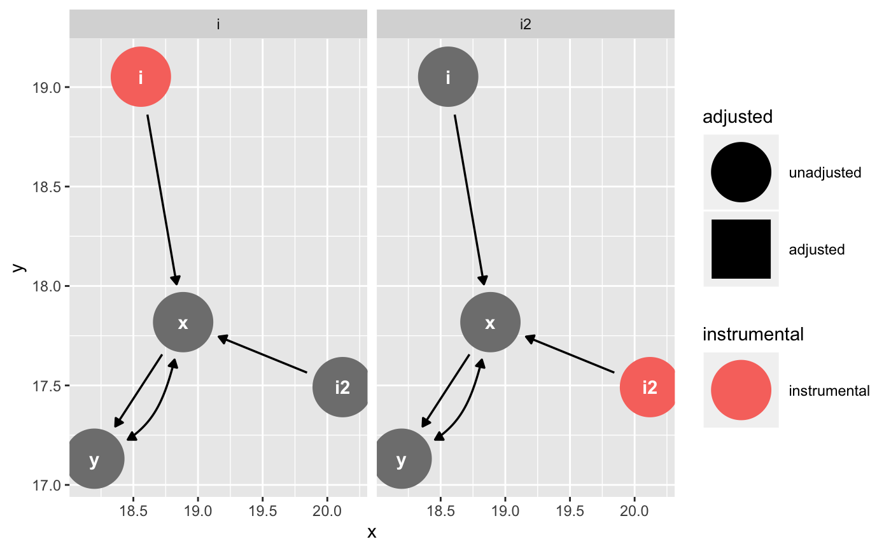

node_instrumental tags instrumental variables given an exposure and
outcome. ggdag_instrumental plots all instrumental variables. See
dagitty::instrumentalVariables() for details.
node_instrumental(.dag, exposure = NULL, outcome = NULL, ...) ggdag_instrumental(.tdy_dag, exposure = NULL, outcome = NULL, ..., node_size = 16, text_size = 3.88, label_size = text_size, text_col = "white", label_col = text_col, node = TRUE, stylized = FALSE, text = TRUE, use_labels = NULL)
| .dag, .tdy_dag | input graph, an object of class |
|---|---|
| exposure | character vector of length 1, name of exposure variable.
Default is |
| outcome | character vector of length 1, name of exposure variable.
Default is |
| ... | additional arguments passed to |
| node_size | size of DAG node |
| text_size | size of DAG text |
| label_size | size of label text |
| text_col | color of DAG text |
| label_col | color of label text |
| node | logical. Should nodes be included in the DAG? |
| stylized | logical. Should DAG nodes be stylized? If so, use
|
| text | logical. Should text be included in the DAG? |
| use_labels | a string. Variable to use for |
a tidy_dagitty with an instrumental column for
instrumental variables or a ggplot
#> # A DAG with 3 nodes and 3 edges #> # #> # A tibble: 4 x 11 #> name x y direction to xend yend circular instrumental_name #> <chr> <dbl> <dbl> <fct> <chr> <dbl> <dbl> <lgl> <chr> #> 1 i 11.1 7.64 -> x 9.96 7.64 FALSE i #> 2 x 9.96 7.64 -> y 9.07 7.64 FALSE i #> 3 x 9.96 7.64 <-> y 9.07 7.64 FALSE i #> 4 y 9.07 7.64 <NA> <NA> NA NA FALSE i #> # ... with 2 more variables: adjusted <fct>, instrumental <chr>